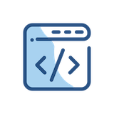

编程这点事

您好，欢迎来到编程这点事站点，在这里聊聊编程这点事，关注并发编程、分布式编程、微服务架构等领域。内容起于编程而不止于编程。
Markdown and I
Markdown is a plain text formatting syntax created by John Gruber, aiming to provide a easy-to-read and feasible markup. The original Markdown syntax specification can be found here.
MacDown is created as a simple-to-use editor for Markdown documents. I render your Markdown contents real-time into HTML, and display them in a preview panel.
I support all the original Markdown syntaxes. But I can do so much more! Various popular but non-standard syntaxes can be turned on/off from the Markdown preference pane.
You can specify extra HTML rendering options through the Rendering preference pane.
You can customize the editor window to you liking in the Editor preferences pane:
You can configure various application (that's me!) behaviors in the General preference pane.
The Basics
Before I tell you about all the extra syntaxes and capabilities I have, I'll introduce you to the basics of standard markdown. If you already know markdown, and want to jump straight to learning about the fancier things I can do, I suggest you skip to the Markdown preference pane. Lets jump right in.
Line Breaks
To force a line break, put two spaces and a newline (return) at the end of the line.
This two-line bullet won't break
This two-line bullet
will break
Here is the code:
* This two-line bullet
won't break
* This two-line bullet
will breakStrong and Emphasize
Strong: **Strong** or __Strong__ (Command-B)
Emphasize: *Emphasize* or _Emphasize_[^emphasize] (Command-I)
Headers (like this one!)
Header 1
========
Header 2
--------or
# Header 1
## Header 2
### Header 3
#### Header 4
##### Header 5
###### Header 6Links and Email
Inline
Just put angle brackets around an email and it becomes clickable: uranusjr@gmail.com<uranusjr@gmail.com>
Same thing with urls: http://macdown.uranusjr.com<http://macdown.uranusjr.com>
Perhaps you want to some link text like this: Macdown Website[Macdown Website](http://macdown.uranusjr.com "Title") (The title is optional)
Reference style
Sometimes it looks too messy to include big long urls inline, or you want to keep all your urls together.
Make a link [a link][arbitrary_id] then on it's own line anywhere else in the file:[arbitrary_id]: http://macdown.uranusjr.com "Title"
If the link text itself would make a good id, you can link like this [like this][], then on it's own line anywhere else in the file:[like this]: http://macdown.uranusjr.com
Images
Inline

Reference style
![Alt Image Text][image-id]
on it's own line elsewhere:[image-id]: path/or/url/to.jpg "Optional Title"
Lists
- Lists must be preceded by a blank line (or block element)
- Unordered lists start each item with a
* -works too- Indent a level to make a nested list
- Ordered lists are supported.
- Start each item (number-period-space) like
1. - It doesn't matter what number you use, I will render them sequentially
- So you might want to start each line with
1.and let me sort it out
- Indent a level to make a nested list
Here is the code:
* Lists must be preceded by a blank line (or block element)
* Unordered lists start each item with a `*`
- `-` works too
* Indent a level to make a nested list
1. Ordered lists are supported.
2. Start each item (number-period-space) like `1. `
42. It doesn't matter what number you use, I will render them sequentially
1. So you might want to start each line with `1.` and let me sort it outBlock Quote
Angle brackets
>are used for block quotes.
Technically not every line needs to start with a>as long as there are no empty lines between paragraphs.
Looks kinda ugly though.Block quotes can be nested.
Multiple Levels
Most markdown syntaxes work inside block quotes.
- Lists
- Links
- Etc.
Here is the code:
> Angle brackets `>` are used for block quotes.
Technically not every line needs to start with a `>` as long as
there are no empty lines between paragraphs.
> Looks kinda ugly though.
> > Block quotes can be nested.
> > > Multiple Levels
>
> Most markdown syntaxes work inside block quotes.
>
> * Lists
> * [Links][arbitrary_id]
> * Etc.Inline Code
Inline code is indicated by surrounding it with backticks:`Inline code`
If your code has `backticks` that need to be displayed, you can use double backticks:``Code with `backticks` `` (mind the spaces preceding the final set of backticks)
Block Code
If you indent at least four spaces or one tab, I'll display a code block.
print('This is a code block')
print('The block must be preceded by a blank line')
print('Then indent at least 4 spaces or 1 tab')
print('Nesting does nothing. Your code is displayed Literally')I also know how to do something called Fenced Code Blocks which I will tell you about later.
Horizontal Rules
If you type three asterisks *** or three dashes --- on a line, I'll display a horizontal rule:
the-markdown-preference-pane">the-markdown-preference-pane">The Markdown Preference Pane
This is where I keep all preferences related to how I parse markdown into html.
Document Formatting
The Smartypants extension automatically transforms straight quotes (" and ') in your text into typographer’s quotes (“, ”, ‘, and ’) according to the context. Very useful if you’re a typography freak like I am. Quote and Smartypants are syntactically incompatible. If both are enabled, Quote takes precedence.
Block Formatting
Table
This is a table:
| First Header | Second Header |
|---|---|
| Content Cell | Content Cell |
| Content Cell | Content Cell |
You can align cell contents with syntax like this:
| Left Aligned | Center Aligned | Right Aligned |
|---|---|---|
| col 3 is | some wordy text | $1600 |
| col 2 is | centered | $12 |
| zebra stripes | are neat | $1 |
The left- and right-most pipes (|) are only aesthetic, and can be omitted. The spaces don’t matter, either. Alignment depends solely on : marks.
fenced-code-block">fenced-code-block">Fenced Code Block
This is a fenced code block:
print('Hello world!')You can also use waves (~) instead of back ticks (`):
print('Hello world!')You can add an optional language ID at the end of the first line. The language ID will only be used to highlight the code inside if you tick the Enable highlighting in code blocks option. This is what happens if you enable it:
I support many popular languages as well as some generic syntax descriptions that can be used if your language of choice is not supported. See relevant sections on the official site for a full list of supported syntaxes.
Inline Formatting
The following is a list of optional inline markups supported:
| Option name | Markup | Result if enabled | |
|---|---|---|---|
| Intra-word emphasis | So A*maz*ing | So Amazing | |
| Strikethrough | ~~Much wow~~ | ||
| Underline [^under] | _So doge_ | So doge | |
| Quote [^quote] | \"Such editor\" | Such editor |
|
| Highlight | \==So good\== | So good | |
| Superscript | hoge\^(fuga) | hogefuga | |
| Autolink | http://t.co | http://t.co | |
| Footnotes | [\^4] and [\^4]: | [^4] and footnote 4 |
[^4]: You don't have to use a number. Arbitrary things like [^footy note4] and [^footy note4]: will also work. But they will render as numbered footnotes. Also, no need to keep your footnotes in order, I will sort out the order for you so they appear in the same order they were referenced in the text body. You can even keep some footnotes near where you referenced them, and collect others at the bottom of the file in the traditional place for footnotes.
the-rendering-preference-pane">the-rendering-preference-pane">The Rendering Preference Pane
This is where I keep preferences relating to how I render and style the parsed markdown in the preview window.
CSS
You can choose different css files for me to use to render your html. You can even customize or add your own custom css files.
Syntax Highlighting
You have already seen how I can syntax highlight your fenced code blocks. See the Fenced Code Block section if you haven’t! You can also choose different themes for syntax highlighting.
TeX-like Math Syntax
I can also render TeX-like math syntaxes, if you allow me to.[^math] I can do inline math like this: \( 1 + 1 \) or this (in MathML): , and block math:
\[ A^T_S = B \]
or (in MathML)
Task List Syntax
- [x] I can render checkbox list syntax
- [x] I support nesting
- [x] I support ordered and unordered lists
- [ ] I don't support clicking checkboxes directly in the html window
Jekyll front-matter
If you like, I can display Jekyll front-matter in a nice table. Just make sure you put the front-matter at the very beginning of the file, and fence it with ---. For example:
---
title: "Macdown is my friend"
date: 2014-06-06 20:00:00
---Render newline literally
Normally I require you to put two spaces and a newline (aka return) at the end of a line in order to create a line break. If you like, I can render a newline any time you end a line with a newline. However, if you enable this, markdown that looks lovely when I render it might look pretty funky when you let some other program render it.
the-general-preferences-pane">the-general-preferences-pane">The General Preferences Pane
This is where I keep preferences related to application behavior.
The General Preferences Pane allows you to tell me how you want me to behave. For example, do you want me to make sure there is a document open when I launch? You can also tell me if I should constantly update the preview window as you type, or wait for you to hit command-R instead. Maybe you prefer your editor window on the right? Or to see the word-count as you type. This is also the place to tell me if you are interested in pre-releases of me, or just want to stick to better-tested official releases.
the-editor-preference-pane">the-editor-preference-pane">The Editor Preference Pane
This is where I keep preferences related to the behavior and styling of the editing window.
Styling
My editor provides syntax highlighting. You can edit the base font and the coloring/sizing theme. I provided some default themes (courtesy of Mou’s creator, Chen Luo) if you don’t know where to start.
You can also edit, or even add new themes if you want to! Just click the Reveal button, and start moving things around. Remember to use the correct file extension (.styles), though. I’m picky about that.
I offer auto-completion and other functions to ease your editing experience. If you don’t like it, however, you can turn them off.
Hack On
That’s about it. Thanks for listening. I’ll be quiet from now on (unless there’s an update about the app—I’ll remind you for that!).
Happy writing!
[^emphasize]: If Underlines is turned on, _this notation_ will render as underlined instead of emphasized
[^under]: If Underline is disabled _this_ will be rendered as emphasized instead of being underlined.
[^quote]: Quote replaces literal " characters with html <q> tags. Quote and Smartypants are syntactically incompatible. If both are enabled, Quote takes precedence. Note that Quote is different from blockquote, which is part of standard Markdown.
[^math]: Internet connection required.